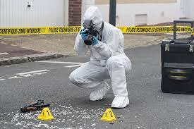
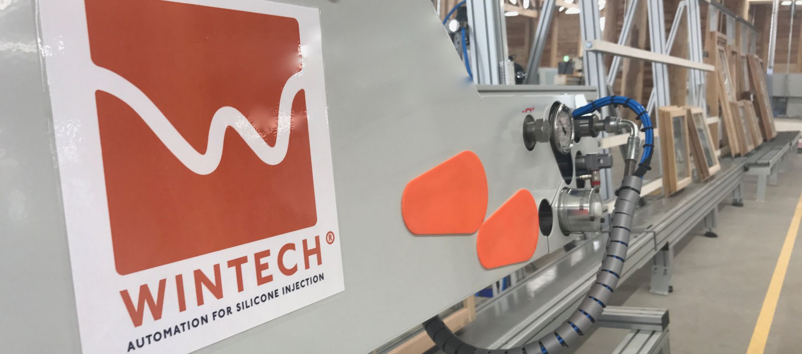
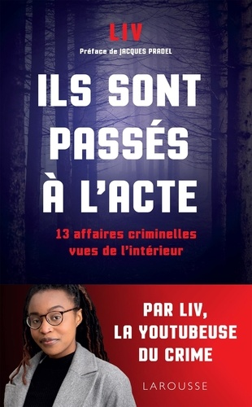
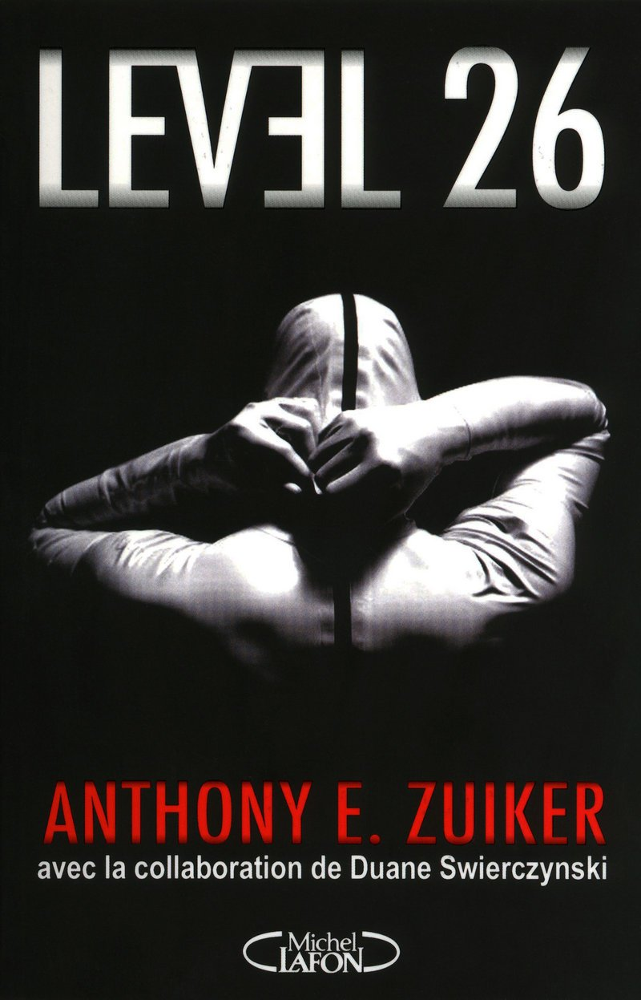
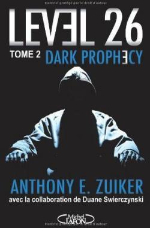
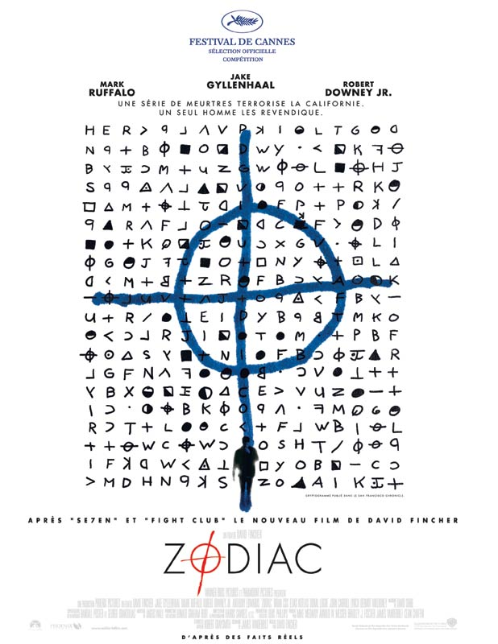

Sommaire:
les métiers que je veux faire
étude à réaliser
spécialités
- JE VEUX FAIRE RESPECTER LA LOI
- JE ME PASSIONNE POUR LES NOUVELLES TECHNOLOGIE
- J'AIME LES LANGUES
Mon métier de prédilection c'est la Police Scientifique.J'envisage aussi de créer de nouvelles technologie,c'est à dire être Ingénieur.Pour finir le dernier métier que j'aimerais faire ,c'est Interprète notamment en français,coréen,anglais et suremment voir d'autres langues plus tard.


Après le BAC:
choix 1 partir minimum 1 an en Corée pour travailler ,y vivre
choix 2 rester en France pour aller à la FAC
Si je fais profiler ,les options à prendre :
Mathématiques
Langues et Littératures Étrangères
Physique - Chimie
Si je fais ingénieur ,les options à prendre :
Mathématiques
Langues et Littératures Étrangères
Physique - Chimie
Si je fais interpréte ,les options à prendre :
Langues et Littératures Étrangères
Comme il faut trois options,je prends aussi:
Physique - Chimie
Mathématiques
Pourquoi ces métiers? car ils sont très éloignés. Pour commencer Profiler car j'adore les enquêtes criminelles. Les histoires criminelles, j'ai beaucoup aimé le film du Zodiac. Ce fameux tueur en série que personne n'a jamais retrouvée. J'ai aussi lu Level 26 et Ils sont passés à l'acte. J'aime beaucoup les enquêtes de Liv, qui est la youtubeuse numéro1 du crime. J'aimerais essayer de comprendre pourquoi, comment les personnes deviennent des criminelles qui méritent la perpétuité. Étudier leur état mental, rechercher l'arme du crime , les empreintes.




Ensuite ingénieur, car je trouve ce métier très intéressant. Faire des câblages, souder... Je trouve que ce travaille avec les machines est important.
Pour finir interprète car j'aime beaucoup les langues. Je parle français, je suis plutôt forte en anglais, j'ai des connaissances en espagnol, j'apprends le coréen. Dans le futur j'aimerais apprendre d'autres langues d'Asie comme le chinois, le japonais, le thaïlandais et le vietnamien.